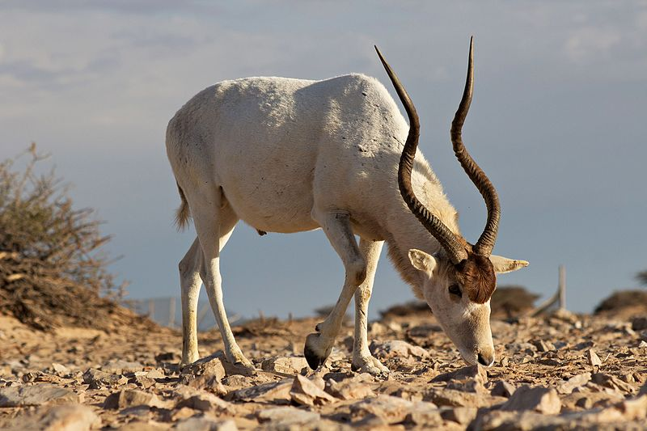
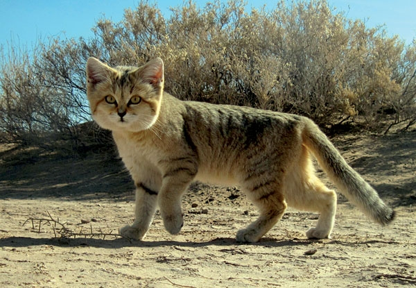

Highlight: Italian Wolf
This subspecies of grey wolf has been steadily increasing population since reaching a record low of 70-100 individuals in the 1970s. The population today is estimated to consist of 500 individuals, although they are still threatened by illegal hunting and considered 'Vulnerable' by the IUCN.
Highlight: European Ground Squirrel
This species of squirrel is found is many countries in Eastern Europe grouped in colonies of burrows on grassy embankments or in pastures. Due to mass conversion of the habitats that they live in the European Ground Squirrel has been listed as 'Vulnerable' by the IUCN, with a downward trend in population believed to be upwards of 30% over the past decade.
Highlight: Mediterranean Monk Seal
Listed as 'Endangered' by the IUCN this species of seal is believed to have less than 700 individuals remaining, grouped into three or four subpopulations. Having faced commercial hunting since the times of the Roman Empire and the Middle Ages the range and population of this species has been shrinking for a long time. This species is almost non-existent in the waters near France, now mostly centered on the Mediterranean and Aegean seas.
Highlight: Sculpin-Perch
With only one population remaining which is reliant on water released by an upstream reservoir this species of fish native to a single river in Romania is labeled as 'Critically Endangered' by the IUCN. It is considered to be the fish species with the most restricted range in Europe, mostly due to habitat destruction as a result of hydrotechnical construction.
Highlight: Northwest African Cheetah
Due to large habitat ranges and extremely small populations the total population of Northwest African Cheetahs is not known, but the IUCN has listed it as 'Critically Endangered' as there were estimated to be less than 500 individuals in 2012. This was based on data collected between 2007-2012 and covering approximately 400,000 square miles of habitat. Due to larger resource problems and higher temperatures than other cheetah species, these cheetahs have adapted to travel larger distances and live in lower densities.
Highlight: Barbary Sheep
This species of sheep native to Northern Africa is labeled as 'Vulnerable' by the IUCN due to human interference in populations and habitat. They have been introduced to many varied places, including southeastern Spain and parts of the southern US, often considered a game animal and a threat to endemic vegetation.
Highlight: Eurasian Otter

Although now classified as 'Not Threatened' by the IUCN, the Eurasian Otter was extremely threatened due to high pesticide usage from the 20th century to just a few decades ago. The recovery of populations and reintroduction to many previous habitats is mostly attributed to the banning of the most harmful pesticides and improvements in water quality since the late 1970s.
Highlight: Addax
Classed as 'Critically Endangered' by the IUCN, this species of antelope is very common in captivity but extremely rare in the wild due to unregulated hunting. Reintroductions to national parks and other preserved locations in their natural habitat are currently underway in a few places in Morocco and Tunisia, but due to the ease with which they may be hunted, fewer than 500 are believed to live in the wild currently.
Highlight: Dugong
Although now extinct in the Mediterranean Sea, Dugongs are still found along the east coasts of Africa. Dependent on seagrass, populations have been decreasing due to hunting and habitat destruction. Labeled as 'Vulnerable' by the IUCN, Dugongs are long-lived and slow breeders, causing even slight reductions in population to have large long-term effects.
Highlight: Euphrates Softshell Turtle
Threatened by habitat loss and alteration, especially the building of dams and pollution, the Euphrates Softshell Turtle is listed as 'Endangered' by the IUCN. Although this species does not seem to have problems nesting near human disturbances, there are many proposed dams that will lead to flooding of the nesting habitat of the Euphrates Softshell Turtle in coming years.
Highlight: Dhole
With a current population of less than 2,500 adults, the IUCN has classed this species as 'Endangered'. Due to disease transfer from domestic dogs, loss of prey and habitat, and competition with other species the Dhole populations have been on the decline for some time. There have been attempts made to use dogs as surrogate mothers to conserve the species, but not progress has been reported since 2016. Dholes are often considered a threat to livestock but not valued for their fur or meat, and some people will appropriate their kills.
Highlight: Sand Cat
The Sand Cat is the only cat species to live chiefly in true deserts. Previously there were problems with a declining population trend and fragmented groupings, but as of 2016 the IUCN has downlisted the Sand Cat to 'Least Concern', although habitat loss degradation is still a major threat to the species. Hunting of this species is not prohibited in all countries, and the IUCN data is focused on global populations.
Highlight: Broom Hare
Hunted excessively in the small ranges that this species lives in, it has been labeled 'Vulnerable' by the IUCN. The region this species is found in is estimated to be a mere 140 miles, mainly in very high elevations. Discovered in 1976, it had been previously reported as another population of the European Hare(pictured).
Highlight: Iberian Lynx
After reaching a population of only 100 individuals at the turn of the century, conservation efforts have managed to triple the population since 2002. The IUCN lists the Iberian Lynx as 'Endangered'. Over a period of 50 years during the late 1900s the species dropped from 15 subpopulations ranging from Southern France to the Mediterranean to only two subpopulations limited in range to a portion of the Iberian Peninsula.
Highlight: Saker Falcon

Since the collapse of the Soviet Union the UAE has been the destination for many illegaly captured and sold falcons from many regions. Kazakhstan is reported as losing 1,000 individuals of the species each year. The IUCN labels the Saker Falcon as 'Endangered' due to the rapid population decline found especially in the breeding grounds of the species. Additionally the Saker Falcon is known to be very susceptible to avian influenza, with vaccines being difficult to administer to individuals found in the wild.